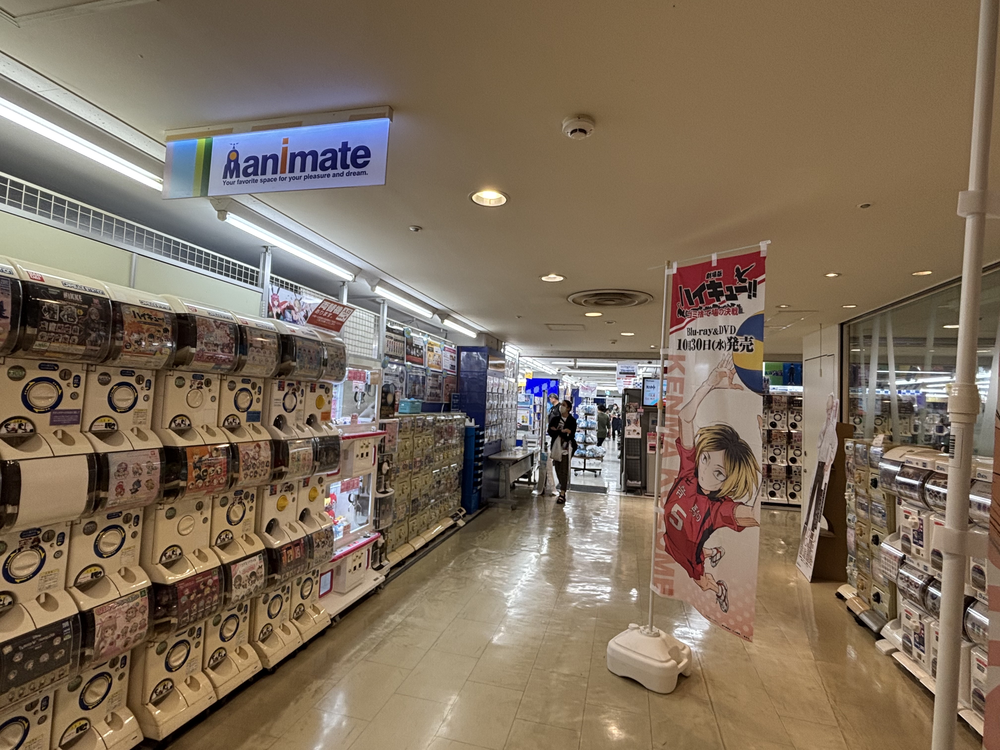
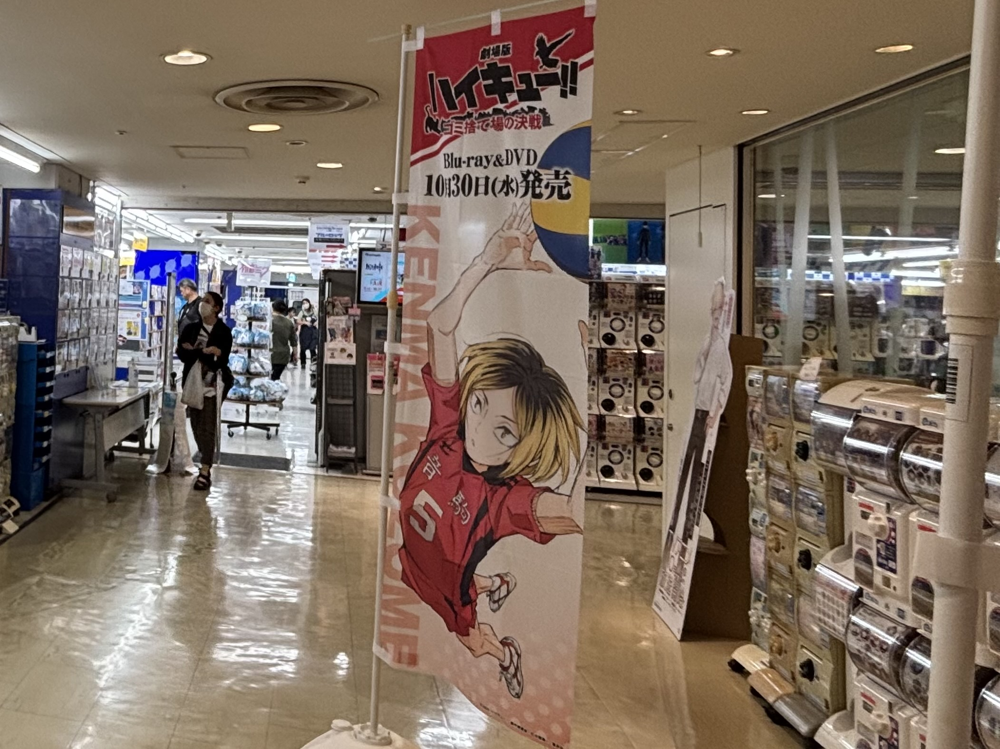
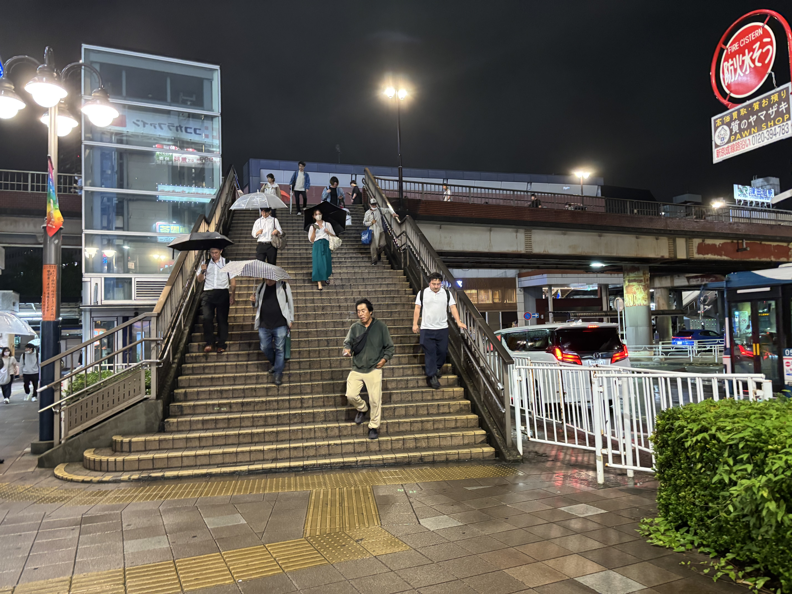
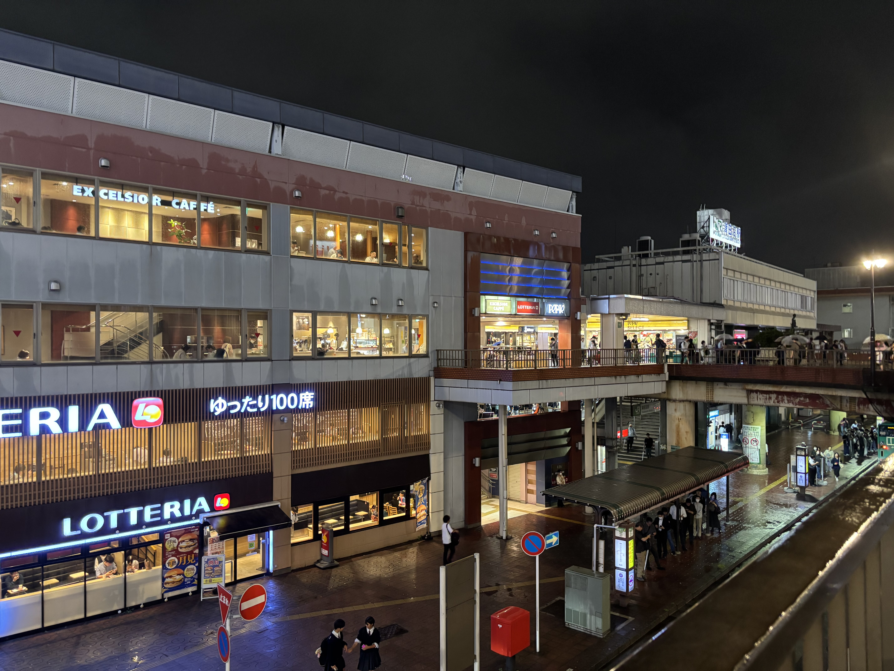

Viit 津田沼

2023年10月に津田沼パルコから生まれ変わりました
地下にはスーパーがあり暮らしの品から娯楽まで全35店舗出店しており見やすい店舗配置がされています。
新しい津田沼の顔として日々進化を遂げるショッピングセンターの一つです。
詳しい行き方は下のページで紹介しているのでご覧ください。
アクセス方法はこちら
2023年10月に津田沼パルコから生まれ変わりました
地下にはスーパーがあり暮らしの品から娯楽まで全35店舗出店しており見やすい店舗配置がされています。
新しい津田沼の顔として日々進化を遂げるショッピングセンターの一つです。
詳しい行き方は下のページで紹介しているのでご覧ください。
アクセス方法はこちら
営業時間:平日1部 12:30～16:30 2部17:30～21:30
土日祝 1部 11:00～14:00 2部 15:00～18:00 3部19:00～22:00 [休業日]休館日に準ずる
場所:RF 屋上 ※エレベーターでしか行くことができないので注意


1位にランクインしたのはBBQ DAYSビート津田沼です!
バーベキューをしたいけど準備や片付けがめんどくさいと思ったことはありませんか!?そんな心配は無用
食材の持ち込みが自由で火起こしから片付けまでしなくてよい都市型BBQを楽しむことができます。
食材が無くなったり、買い足したい場合はエレベーターで地下まで行くとスーパーがあるのでスーパー直結型BBQ!
食材を買わずに料金とセットになっていて手ぶらBBQをすることもできます。
また、屋上ということで景色も抜群!雨でもテントが設置されているので天候に左右されずに楽しむことができます。
友達との思い出作りや夏にはもってこい!
※予約やプランなどはホームページをご確認ください。BBQ DAYS
営業時間:10:00〜20:00 場所:1F 入ってすぐ


第2位はセカンドストリートモリシア津田沼店になります。
誰もが好きなファッションですが新しい服を買うには学生には厳しい・・・というお悩みはありませんか?
中古の服を専門に扱う店舗でブランド品や流行の服を格安で手に入れることができます。また、新しく買ったからこの服は不要になったことはありませんか?
販売だけでなく、中古服の買取も行っているので売ったお金で新しい服を買う方法も!
メンズだけでなくレディースの服や靴の販売も行っているので足を運んでみてください。
店舗に飾ってあるマネキンを確認して最新の流行ファッションをチェック!
※取り扱い商品に関してはホームページをご確認ください。2nd STREET
営業時間:平日 11:00～21:00 土日祝 11:00～20:00 ※営業時間が異なります。 場所:5F エスカレーター前



第3位はアニメイト津田沼店になります!
アニメのキャラクターグッズやフィギュア・ガチャガチャなど豊富なラインナップでアニメ好きの方は必見!
アニメをあまり見ない方も足を運んでみてはいかがでしょうか?
人気のアニメからマニアックなアニメまで多くのグッズがあり、これを機にアニメという新たな趣味を見つけるチャンスでもあります。
店内には多くの人気アニメのアクリルスタンドや書籍・カードがずらりと並んでおり日本最大級のアニメ専門店ならではの品揃え。
店舗前には大人気アニメの「ハイキュー!!」の旗があり写真を撮って思い出になること間違いなし!
平日と土日祝では営業時間が違うので注意してください。
※詳しくはホームページをご確認ください。店舗ホームページ

1. 改札を出て右(南口)に向かいます。

2.津田沼駅の南口に出ます。

3.歩道橋をまっすぐ進みます。正面に見えてきます。

4.しばらくすると左側に階段が見えてきます。
.jpeg)
5.階段を下に降ります。

7.階段を降りるとモリシアに到着です。

1.改札を出て左南方向へ

2.右側にJR津田沼駅方面の階段が見えてくるので降ります。

3.階段を降りると交差点に差し掛かるので渡ります。

4.渡ったら右にまっすぐ進みます。

5.左側に歩道橋の階段が見えてくるので上ります。

6.階段を上がったら右に行き津田沼駅の方向に進みます。

7.JR津田沼駅の北口が見えてくるので駅の中を通って南口に行きます。
8.歩道橋があるのでまっすぐ進みます。
9.左側に階段が見えてくるので下に降ります。
10.階段を降りたらモリシアに到着です。